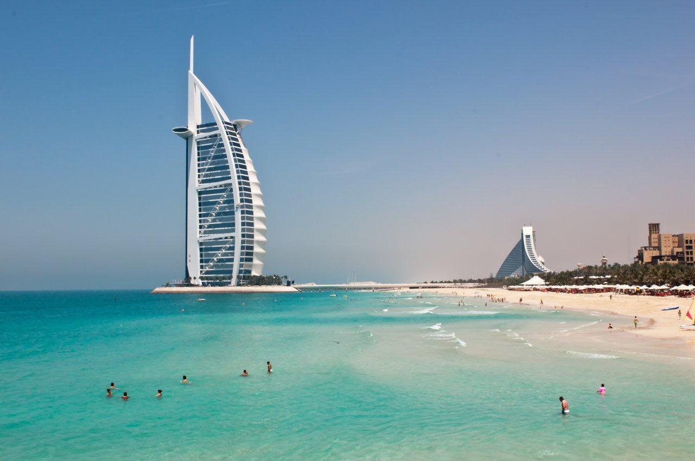

Entre 1950 e 1973 se inicia a falar de “boom” turístico. O turismo internacional cresce a um ritmo superior ao de toda a sua história. Este desenvolvimento é consequência da nova ordem internacional, a estabilidade social e o desenvolvimento da cultura do ócio no mundo ocidental. Nesta época se começa a legislar sobre o setor.
A recuperação econômica, especialmente da Alemanha e do Japão, foi uma assombrosa elevação dos níveis de renda destes países e fazendo surgir uma classe média estável que começa a interessar-se por viagens.
